Trash Panda QC: Press Kit
"the sonic equivalent of a paintball battle . . . every second of "Dropup" is weird and uncompromising." - Ryan Masteller,
Tabs Out,
"New Batch - Moss Archive"
"so bouncy and fun that even though it's fresh vagueness feels very much concrete, it gets my muscles loose & my mind baking. Is that a vague description? Yes, but come on, the music.. this music. . . it's balancing on the edge of music itself and that on its own makes it so exciting" - KN,
Yeah I Know It Sucks,
"Peter Seligman - s:t ~ray"
"Wickedly challenging and invigoratingly playful in a way we’ve all come to love and expect from Conditional, Trash Panda QC’s ‘Jumps 19’ works a sort of straightjacketed funk akin to Team Doyobi and SDEM but with a deep fried electronic sauciness of his own brewing . . ." -
Boomkat,
"Jumps 19"
"melted-down music, reduced to constituent parts that jostle against each other, re-combining into new monstrous forms" - Guy Birkin,
Aesthetic Complexity,
"2017"
Trash Panda QC is a producer, dj, and live performer, formerly releasing under real name Peter Seligman and occasionally as half of noise duo enn{kdog. Trash Panda is a semi-affectionate term for a raccoon and QC doesn't stand for anything. While taking influence from classic rave tunes, the unexpectedly friendly fringes of noise music, and footwork's rhythmic construction, his music is less about fusion and more about leaving history behind for the release of the unknown, characterized by constantly shifting beats, cognitively dissonant change ups, and lots of weird EDM bird noises.
Past releases and remixes as Peter Seligman have appeared on
Moss Archive,
Conditional,
Tsuku Boshi, and
Jacktone, as well as an extensive
self-released discography; Trash Panda QC has released on
Edvacm Editions,
Co-Dependent, and
Conditional. As
enn{kdog, along with
Mysterious House, he has released on
Immigrant Breast Nest and
Visual Disturbances.
Selected live photos, past flyers, and artwork - click for full resolution

Live at Magick City, 2019, photo by William Fields.

Live at Trans Pecos, 2016, photo by Aaron Tripp.

Live as enn{kdog with James Mercer (Mysterious House) at Gallery MC, 2015, photo by Daniel Abatemarco.
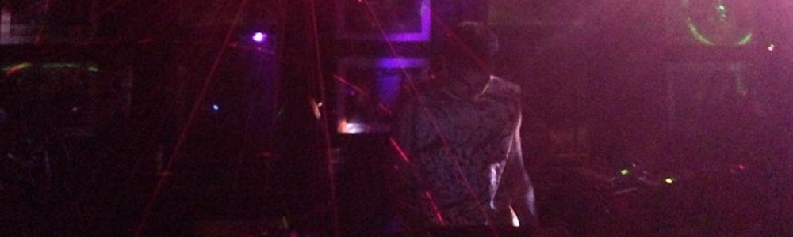
Live at Bizarre Bar, 2014, photo by Daniel Allen Perez.

Live as enn{kdog with James Mercer (Mysterious House) at The Living Gallery, 2014, photo by Kate Henderson.

Cover art for Sinkhole Racer 2015 2010 2017 by Peter Seligman, 2019.

Cover art for s:t ~ray by Peter Seligman, 2018.

Artwork variation for s:t ~ray by Peter Seligman, 2018.

Cover art for Dropup by Joseph Bastardo and Peter Seligman, 2017.

Cover art for ongswim / 17flx by Peter Seligman, 2017.
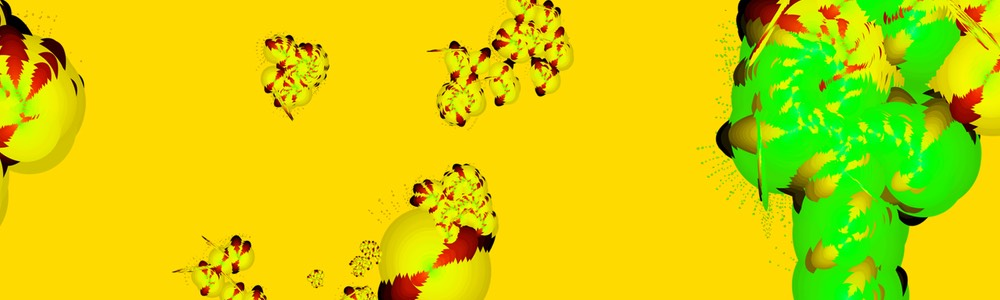
Artwork variation for ongswim / 17flx by Peter Seligman, 2017.
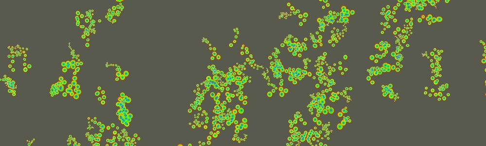
Cover art for Re3 by Peter Seligman, 2016.
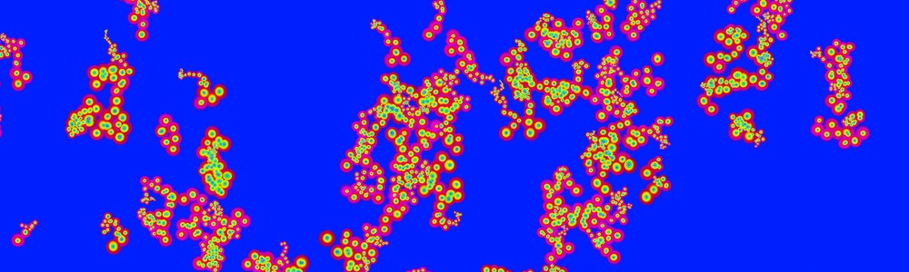
Artwork variation for Re3 by Peter Seligman, 2016.
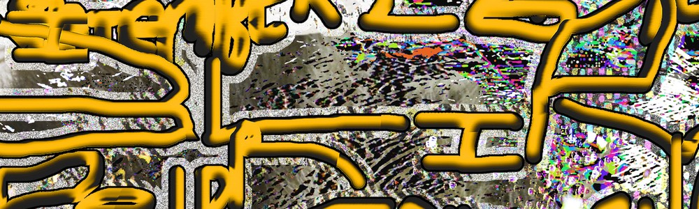
Flyer for 9/16/2015 at Muchmore's with BlipVert, Heidi Sabertooth, Max Alper, and Mysterious House. Artwork by Peter Seligman and James Mercer
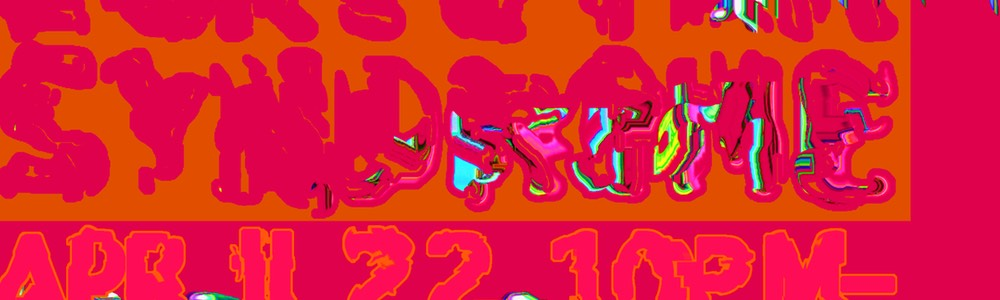
Flyer for 4/22/2015 at Troost with Bae Bro and Computer Syndrome. Artwork by Peter Seligman
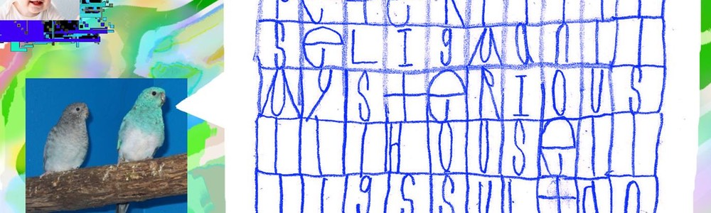
Flyer for 9/8/2015 at Muchmore's with Eve Essex, Mysterious House, and GS Sultan. Artwork by James Mercer
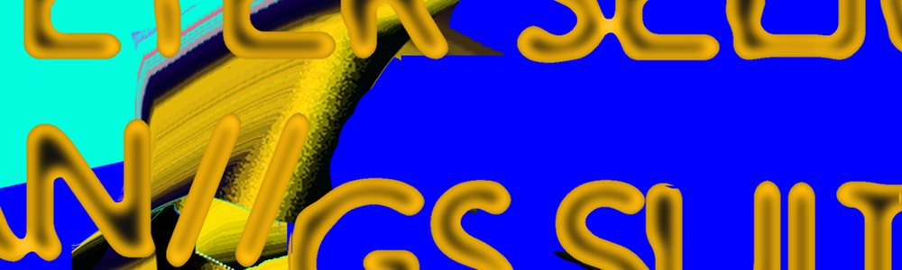
Flyer for 10/26/2015 at Elvis Guesthouse with Engine, GS Sultan, Snaykhunt, Champagne Sequins, and Straw. Artwork by Peter Seligman
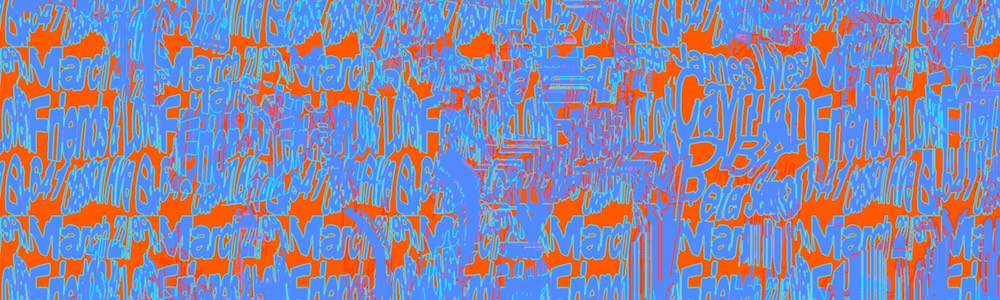
Flyer for 3/14/2016 at Friends and Lovers with James West, Cayman, and DBK. Artwork by Peter Seligman
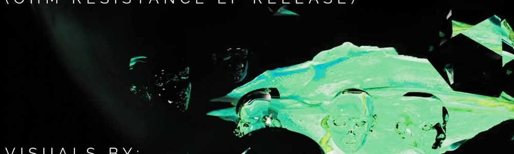
Flyer for 7/8/2016 at Trans Pecos with Speak Onion, Solaris, Bastet, and C10. Artwork by Abstract Conditions
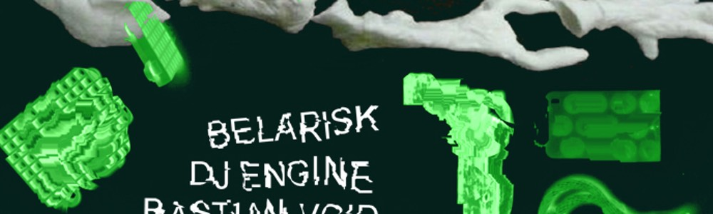
Flyer for 9/24/2016 at The Gateway with Belarisk, Engine, Bastian Void, and Mysterious House. Artwork by Belarisk.
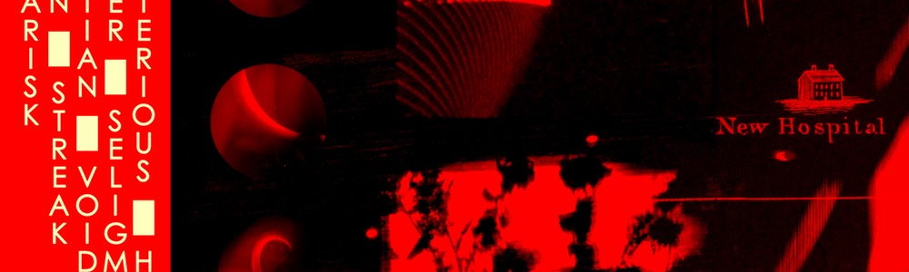
Flyer for 9/19/2017 at Aurora Club with Belarisk, Mean Streak, Bastian Void, and Mysterious House. Artwork by Belarisk.